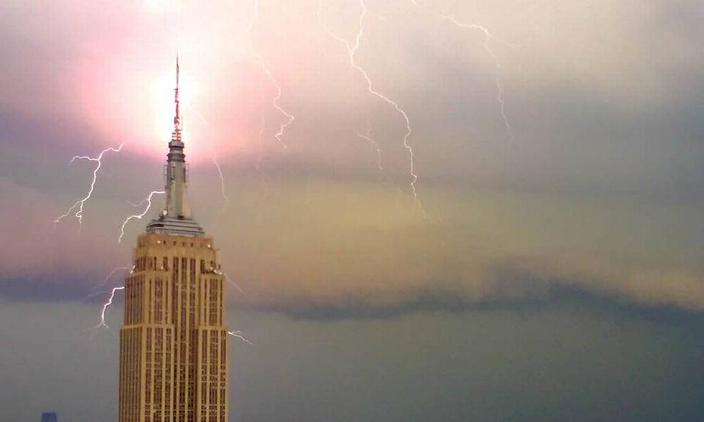
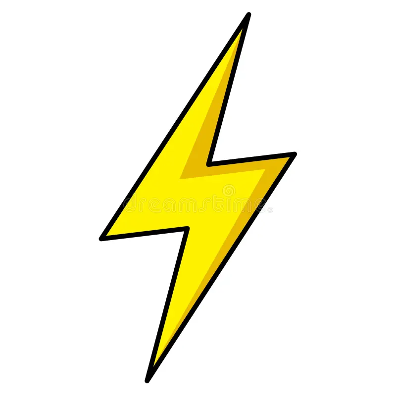
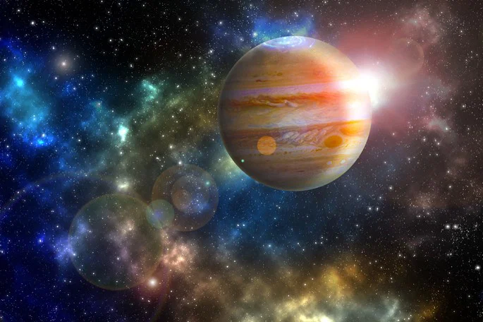

Um raio nunca cai duas vezes no mesmo lugar.

Cai sim. O Empire State Building, por exemplo, é atingido por dezenas de raios todo ano.

Um raio nunca cai duas vezes no mesmo lugar.

Cai sim. O Empire State Building, por exemplo, é atingido por dezenas de raios todo ano.

Qual o maior planeta do sistema solar?

Júpiter é o maior planeta do Sistema Solar, com um diâmetro de aproximadamente 143 mil quilômetros. Ele é um gigante gasoso, composto principalmente de hidrogênio e hélio.